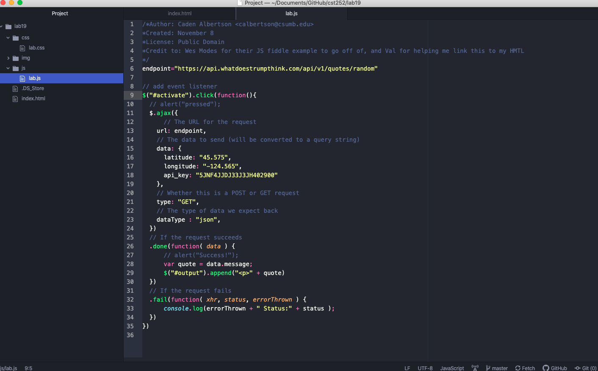

Lab 19: AJAX
Here is the Javascript source
Challenges
I'm having a hard time getting the button to work but otherwise this is fine.
Results
An HMTL index that draws fom jQuery and AJX typed in css to make a button that draws random facts from a library when you press it.
This what I used in Atom.
